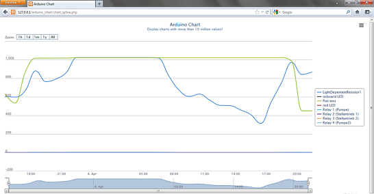
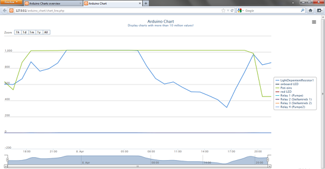
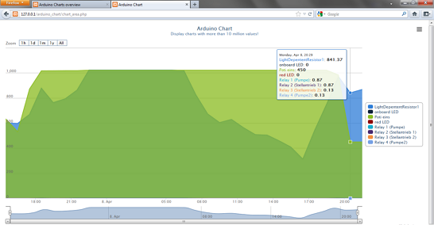
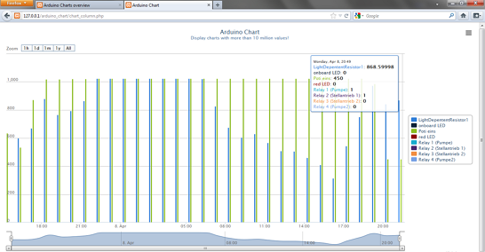

Hello!
This is the Index-Site from Arduino-Charts.
Below you will find some examples of charts.
Each chart is a single .php file in the webroot folder. You could open a chart directly from your browser too.
You can customize the charts as you need. Please look into the HighStock example folder for more examples.
Here are my charts that i usually use.
Don't forgett to change the "this.url" in your charts file to your location of the db_access.php. If you don't know why look in the readme.txt
If you have any question contact me via the blog article "Arduino simple chart".
www.edvler-blog.de
Klick on the picture to open the chart!
Spline Chart

Line Chart

Area Chart

Column Chart
